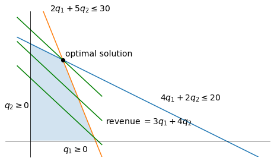

Chapter 3 - Optimal Flows (Python Code)¶
We begin with some imports
import quantecon as qe
import numpy as np
import matplotlib.pyplot as plt
from matplotlib import cm
from matplotlib.patches import Polygon
from matplotlib.artist import Artist
from scipy.optimize import linprog
import networkx as nx
import ot
Linear Programming and Duality¶
Figure 3.7: Betweenness centrality (by color and node size) for the Florentine families
G = nx.florentine_families_graph()
bc_dict = nx.betweenness_centrality(G)
fig, ax = plt.subplots(figsize=(10, 10))
plt.axis("off")
nx.draw_networkx(
G,
ax=ax,
pos=nx.spring_layout(G, seed=1234),
with_labels=True,
alpha=.8,
arrowsize=15,
connectionstyle="arc3,rad=0.1",
node_size=[10_000*(size+0.1) for size in bc_dict.values()],
node_color=[cm.plasma(bc+0.4) for bc in bc_dict.values()],
)

Figure 3.9: Revenue maximizing quantities
fig, ax = plt.subplots(figsize=(8, 4.5))
plt.rcParams['font.size'] = '14'
# Draw constraint lines
ax.plot(np.linspace(-1, 17.5, 100), 6-0.4*np.linspace(-1, 17.5, 100))
ax.plot(np.linspace(-1, 5.5, 100), 10-2*np.linspace(-1, 5.5, 100))
ax.text(1.5, 8, "$2q_1 + 5q_2 \leq 30$")
ax.text(10, 2.5, "$4q_1 + 2q_2 \leq 20$")
ax.text(-2, 2, "$q_2 \geq 0$")
ax.text(2.5, -0.7, "$q_1 \geq 0$")
# Draw the feasible region
feasible_set = Polygon(np.array([[0, 0],
[0, 6],
[2.5, 5],
[5, 0]]))
ax.add_artist(feasible_set)
Artist.set_alpha(feasible_set, 0.2)
# Draw the objective function
ax.plot(np.linspace(-1, 5.5, 100), 3.875-0.75*np.linspace(-1, 5.5, 100), 'g-')
ax.plot(np.linspace(-1, 5.5, 100), 5.375-0.75*np.linspace(-1, 5.5, 100), 'g-')
ax.plot(np.linspace(-1, 5.5, 100), 6.875-0.75*np.linspace(-1, 5.5, 100), 'g-')
ax.text(5.8, 1, "revenue $ = 3q_1 + 4q_2$")
# Draw the optimal solution
ax.plot(2.5, 5, "o", color="black")
ax.text(2.7, 5.2, "optimal solution")
for spine in ['right', 'top']:
ax.spines[spine].set_color('none')
ax.set_xticks(())
ax.set_yticks(())
for spine in ['left', 'bottom']:
ax.spines[spine].set_position('zero')
ax.set_ylim(-1, 8)
plt.show()

Optimal Transport¶
Figure 3.10: Transforming distribution \(\phi\) into distribution \(\psi\)
σ = 0.1
def ϕ(z):
return (1 / np.sqrt(2 * σ**2 * np.pi)) * np.exp(-z**2 / (2 * σ**2))
def v(x, a=0.4, b=0.6, s=1.0, t=1.4):
return a * ϕ(x - s) + b * ϕ(x - t)
fig, ax = plt.subplots(figsize=(10, 4))
x = np.linspace(0.2, 4, 1000)
ax.plot(x, v(x), label="$\\phi$")
ax.plot(x, v(x, s=3.0, t=3.3, a=0.6), label="$\\psi$")
ax.legend(loc='upper left', fontsize=12, frameon=False)
ax.arrow(1.8, 1.6, 0.8, 0.0, width=0.01, head_width=0.08)
ax.annotate('transform', xy=(1.9, 1.9), fontsize=12)
plt.show()

Figure 3.13: An optimal transport problem solved by linear programming
from scipy.stats import binom, betabinom
class Node:
def __init__(self, x, y, mass, group, name):
self.x, self.y = x, y
self.mass, self.group = mass, group
self.name = name
def build_nodes_of_one_type(group='phi', n=100, seed=123):
nodes = []
np.random.seed(seed)
for i in range(n):
if group == 'phi':
m = 1/n
x = np.random.uniform(-2, 2)
y = np.random.uniform(-2, 2)
else:
m = betabinom.pmf(i, n-1, 2, 2)
x = 0.6 * np.random.uniform(-1.5, 1.5)
y = 0.6 * np.random.uniform(-1.5, 1.5)
name = group + str(i)
nodes.append(Node(x, y, m, group, name))
return nodes
n_phi = 32
n_psi = 32
phi_list = build_nodes_of_one_type(group='phi', n=n_phi)
psi_list = build_nodes_of_one_type(group='psi', n=n_psi)
phi_probs = [phi.mass for phi in phi_list]
psi_probs = [psi.mass for psi in psi_list]
c = np.empty((n_phi, n_psi))
for i in range(n_phi):
for j in range(n_psi):
x0, y0 = phi_list[i].x, phi_list[i].y
x1, y1 = psi_list[j].x, psi_list[j].y
c[i, j] = np.sqrt((x0-x1)**2 + (y0-y1)**2)
pi = ot.emd(phi_probs, psi_probs, c)
g = nx.DiGraph()
g.add_nodes_from([phi.name for phi in phi_list])
g.add_nodes_from([psi.name for psi in psi_list])
for i in range(n_phi):
for j in range(n_psi):
if pi[i, j] > 0:
g.add_edge(phi_list[i].name, psi_list[j].name, weight=pi[i, j])
node_pos_dict={}
for phi in phi_list:
node_pos_dict[phi.name] = (phi.x, phi.y)
for psi in psi_list:
node_pos_dict[psi.name] = (psi.x, psi.y)
node_color_list = []
node_size_list = []
scale = 8_000
for phi in phi_list:
node_color_list.append('blue')
node_size_list.append(phi.mass * scale)
for psi in psi_list:
node_color_list.append('red')
node_size_list.append(psi.mass * scale)
fig, ax = plt.subplots(figsize=(7, 10))
plt.axis('off')
nx.draw_networkx_nodes(g,
node_pos_dict,
node_color=node_color_list,
node_size=node_size_list,
edgecolors='grey',
linewidths=1,
alpha=0.5,
ax=ax)
nx.draw_networkx_edges(g,
node_pos_dict,
arrows=True,
connectionstyle='arc3,rad=0.1',
alpha=0.6)
plt.show()